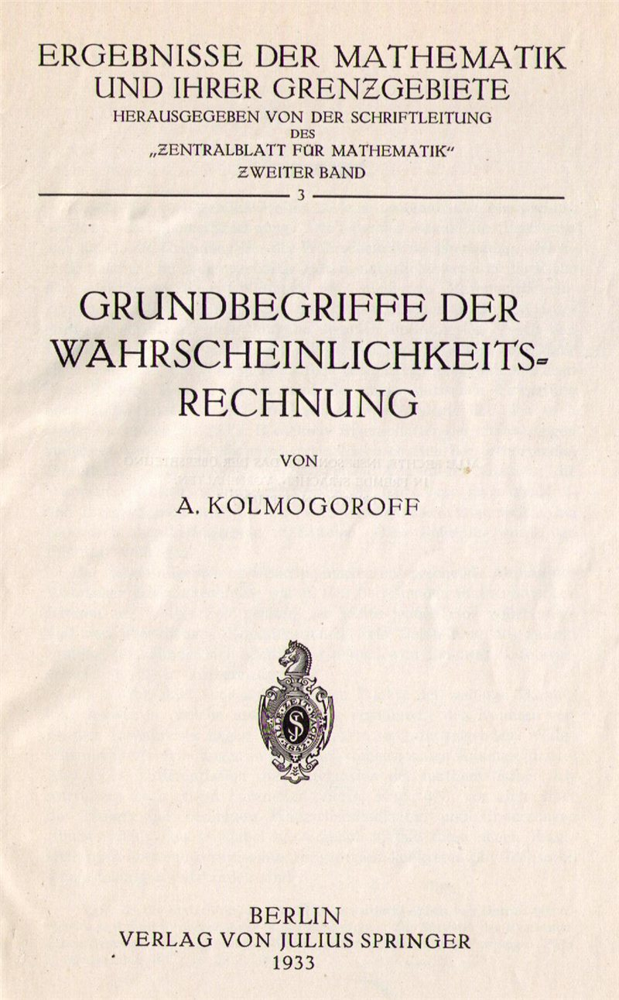
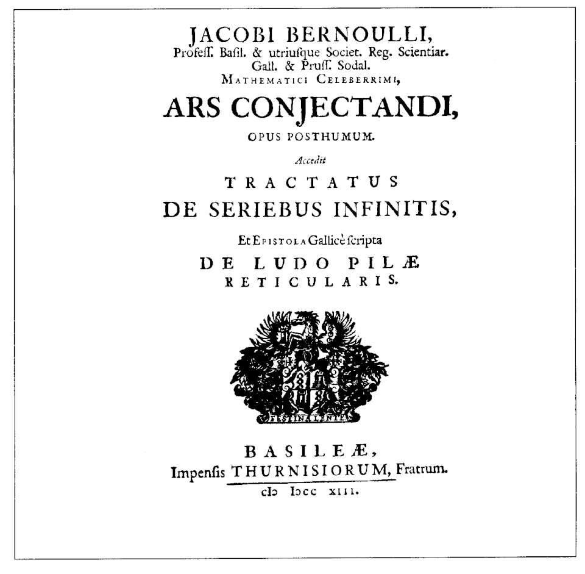

Probability theory began as a calculus of games. In 1654 Pascal and Fermat exchanged letters on the "problem of points" (how to divide the stakes of an interrupted game), Huygens wrote the first textbook in 1657, Jacob Bernoulli proved the first law of large numbers in the posthumous Ars Conjectandi (1713), de Moivre found the normal approximation to the binomial in 1733, and Laplace turned the subject into a systematic theory in his Théorie analytique des probabilités (1812). For the next century, however, the foundations remained unclear: what exactly is an "event", and what is a "random variable"? Hilbert's sixth problem (1900) asked for an axiomatic treatment of probability alongside mechanics.
The answer came in 1933, when A. N. Kolmogorov published the Grundbegriffe der Wahrscheinlichkeitsrechnung. Kolmogorov observed that the new theory of measure and integration created by Borel, Lebesgue, Fréchet and Radon was exactly the right language: a probability is a measure of total mass one, a random variable is a measurable function, and an expectation is a Lebesgue integral. Once this identification is made, the deep limit theorems of the subject (the strong law of large numbers, the central limit theorem, the convergence of Markov chains, the martingale convergence theorem) become precise statements with rigorous proofs, and probability becomes a branch of analysis with its own distinctive intuition.
This course develops that theory at the level of a first graduate course. The elementary rules met in a school course (P(not A) = 1 − P(A), the addition rule, the multiplication rule for independent events, expected value as a weighted average) are taken as known; here they are derived from axioms, generalised to infinite and continuous settings, and used as tools to prove theorems. We assume familiarity with real analysis (limits, series, the Riemann integral, basic topology of ℝ) and linear algebra. Measure theory is introduced as needed, with the central convergence theorems stated precisely and their proofs sketched or referenced.
Notation used throughout: (Ω, 𝓕, P) is a probability space; ω ∈ Ω is a sample point; 1A is the indicator function of A; Aᶜ is the complement of A; a.s. means "almost surely", that is, outside an event of probability zero; i.i.d. means "independent and identically distributed"; Φ is the standard normal distribution function; and log denotes the natural logarithm.
In this course, you will:
- 1.Build probability on Kolmogorov's axioms: σ-algebras, probability measures, and the extension and uniqueness theorems
- 2.Master conditional probability, Bayes' theorem, independence of events and σ-algebras, and the Borel–Cantelli lemmas
- 3.Treat random variables as measurable maps and classify their distributions (discrete, absolutely continuous, singular)
- 4.Define expectation as a Lebesgue integral and use the monotone and dominated convergence theorems
- 5.Use probability generating functions, moment generating functions and characteristic functions
- 6.Prove and apply the inequalities of Markov, Chebyshev, Jensen, Hölder and Chernoff
- 7.Distinguish the four main modes of convergence and know every implication and counterexample between them
- 8.Prove the weak law of large numbers and the strong law under a fourth-moment hypothesis
- 9.Prove the central limit theorem with characteristic functions and meet its refinements
- 10.Work with conditional expectation and martingales, and prove the optional stopping theorem
- 11.Analyse Markov chains: recurrence, stationary distributions and convergence to equilibrium
- 12.Construct and characterise the Poisson process
Figures


Contents
Probability Spaces and the Kolmogorov Axioms Lesson 2
Conditioning, Bayes' Theorem and Independence Lesson 3
Random Variables and Their Distributions Lesson 4
Expectation as a Lebesgue Integral Lesson 5
Generating Functions and Characteristic Functions Lesson 6
The Fundamental Inequalities Lesson 7
Modes of Convergence Lesson 8
The Laws of Large Numbers Lesson 9
The Central Limit Theorem Lesson 10
Conditional Expectation and Martingales Lesson 11
Markov Chains Lesson 12
The Poisson Process Problem Set
60 problems Assessment
Randomly generated questions
Image sources
- Figure 1 · Kolmogoroff Grundbegriffe. By KurtSchwitters. CC BY-SA 3.0. From Wikimedia Commons: https://commons.wikimedia.org/wiki/File:Kolmogoroff_Grundbegriffe.png
- Figure 2 · Arsconj. By Jakob Bernoulli. Public domain. From Wikimedia Commons: https://commons.wikimedia.org/wiki/File:Arsconj.gif